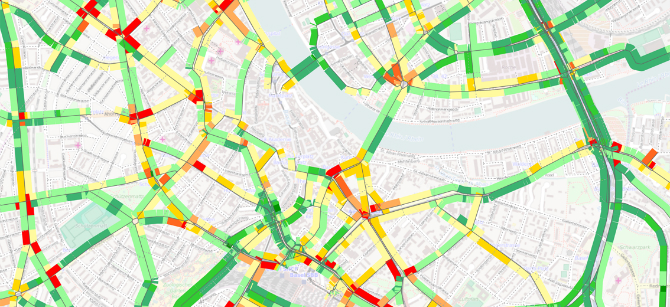
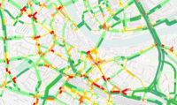

 <div id="vsebina">
    <div class="panel col-xs-12 col-sm-9 ">      
                
           
               <div class="paragraph collapse in col-xs-12 col-sm-8" > 
                <h1 class="glavniNaslov">PTV Visum Data Analytics</h1>     
                <p class="bodytext">PTV Visum Data Analytics snažan je GIS alat koji podupire GIS stručnjake i stručnjake za transport. Kombinira podatke karata s bilo kojom vrstom prometnih podataka i prostornih podataka. Osim toga, vizualizira sve podatke te omogućuje korisnicima da razumiju svoje mreže kako bi razvili pametne strategije i rješenja.</p><br>
                <p>Pomoću PTV Visum Data Analytics može se početi s grafičkim analizama podataka bez prethodnog rada na konačnim modelima koristeći snažne, ali jednostavne alate za vizualizaciju.
                Uklonili smo praznine između GIS-a i timova za modeliranje te na taj način pružamo korisnicima brz i učinkovit skup podataka te procesor za obradu podataka - sve kroz jednu korisničku platformu.
                </p><br>
                <p>Na temelju PTV Visuma, novi  PTV Visum Data Analytics GIS alat opremljen je najkvalitetnijom tehnologijom razvoja softvera.  Sam po sebi snažan alat također nudi logičan put nadogradnje na druge aspekte planiranja transporta, kao što su modeliranje prema zahtjevu ili analiza sigurnosti na cesti.</p>  
                            
                <h3>Izrađeno s PTV Visum Data Analytics</h3>
                <ul>
                  <li><h3>Hot Spot analiza u Baselu</h3>
                   <a href="_slike/Visum_Data_Analytics.jpg" target="_blank"></a>
                  </li>
                </ul>
              </div> 
<!--............................................... -->                
   
              <div class="paragraph collapse col-xs-12 col-sm-8" id="prednosti" > 
              <h1 class="podNaslov">Prednosti</h1> 
              
              <h3>Najbolji GIS alat za pretraživanje značajki rute po pristupačnoj cijeni</h3>   
               <p class="bodytext">PTV Visum Data Analytics je valjana alternativa skupim GIS sustavima. Na temelju PTV Visum tehnologije dolazi s vrijednim funkcionalnostima za izgradnju pripisanih mrežnih modela i vizualizaciju prometnih i svih ostalih vrsta georeferenciranih podataka.</p> 
               
              <h3>Jednostavan rad zbog lagane i fleksibilne konfiguracije softwarea</h3><p>
              Intuitivno grafičko sučelje PTV Visum Data Analytics korisnicima omogućuje brzo pokretanje integracije podataka - čak i bez detaljnog predznanja modeliranja. Započnite s PTV Visum Data Analyticsom i ostanite fleksibilni. Proširite funkcionalnost vašeg proizvoda s potrebnim značajkama.
              </p>              
              
                <h3>One Stop Shop: Paketi softvera i podataka koje pruža PTV Groupa čine vašu analizu spremnu za početak</h3><p>
              Koristite našu široku ponudu troškovno učinkovitih i prilagođenih prometnih podataka namijenjenih isključivo za korištenje pomoću naših softverskih proizvodima:
                <br><br>
                <b>Karte podataka.</b> PTV Group vam nudi unaprijed pripisane karte prilagođene vašim potrebama koje su idealne za neposrednu upotrebu pomoću PTV Visum Data Analytics. Naši proizvodi upotrebljavaju visoko kvalitetne komercijalne karte podataka od TomTom © i HERE ©, kao i dostupnih OpenStreetMap podataka. To stvara samoodržive pokretne mreže koje su odmah spremne za upotrebu te koje su poboljšane širokim rasponom dodatnih atributa prema specifičnim zahtjevima kupca.
                <br><br>
                <b>Povijesni podaci o brzini. </b> Našim kupcima softwarea omogućavamo pristup najvećim svjetskim izvorima prometnih podataka. GPS mjerenja koje pružaju naši partneri INRIX, TomTom i HERE sadrže empirijski izmjerene podatke o brzini za preko 50 zemalja širom svijeta. Iskoristite povećanu učinkovitost korištenjem unaprijed obrađenih podataka od strane PTV Groupe, koji su već prilagođeni vašim individualnim zahtjevima i prilagođeni za izravnu upotrebu u PTV Visum Data Analytics.
               </p>
               
              <h3>Jednostavno nadograditi za dodavanje funkcija javnog prijevoza, sigurnosti ili modeliranja</h3><p>
              PTV Visum Data Analytics temelji se na PTV Visumu i našoj dubokoj stručnosti u području planiranja transporta. Ako želite imati koristi od širokog spektra PTV Visum funkcionalnosti, jednostavno nadogradite svoj PTV Visum Data Analytics alat na punu verziju PTV Visuma i dodajte daljnje module.
              </p> 
                 
               
              <h3>Isplativija opcija za proširenje vašeg tima koji koriste PTV Visum</h3><p>
              PTV Visum Data Analytics okuplja korisnike PTV Visum i GIS stručnjake. Koristite PTV Data Visum Analytics kako biste stvorili jednu platformu za GIS ekipe i timove za modeliranje kako biste uskladili razmjenu podataka. Za korisnike Visuma koji trebaju povećati broj radnih stanica za pomoćne zadatke, PTV Visum Data Analytics nudi jeftinu alternativu u potpunoj licenci PTV Visum.
              </p>
                 
               
              <h3>Snažna podrška</h3><p>
             Postanite član naše velike međunarodne korisničke zajednice. Iskoristite naš kvalificirani i posvećen tim za podršku, naše profesionalne usluge, detaljnu dokumentaciju i opsežne programe edukacije  osiguravajući visoku razinu razmjene znanja.
              </p> 
          </div> 

<!--............................................... -->
              <div class="paragraph collapse col-xs-12 col-sm-8" id="demoVerzija">
              <h1 class="podNaslov">Demo verzija</h1>            
               <p class="bodytext">Isprobajte demo verziju i upoznajte PTV softwere!</p> 
               <div id="demoVerzija">
                <a id="mail" href="form.html">DEMO VERZIJA</a>
              </div>                
              </div>   
             
 <!--............................................... -->                  
         <div class="col-xs-11 col-sm-4">
            <aside>             
              <div id="pdfji">
                <b>Dodatne inforamcije:</b>
                <div class="pdf"><a href="_ostalo/BRO_PTV_Epics_AEN.pdf" target="_blank"><i class="fa fa-file-pdf-o" aria-hidden="true"></i>  PTV Epics Brochure</a></div>                                               
              </div>

              <div>
                <a id="mail" href="mailto:info@appia.si" target="_top">Kontaktirajte  nas!</a>
              </div>
              <div id="demoVerzija">
                <a id="mail" href="form.html">Demo verzija</a>
              </div>
              <br>
              <div class="infoBox" id="distributer">                   
               <b id="kontaktDistributerjaNaslov">Kontakt distibuterja</b><br>
               <a href="http://www.appia.si/" target="_blank">Appia d.o.o </a> <br>
               telefon:+386 1 524 05 20<br>
               E: <a href="mailto:info@appia.si" target="_top">info@appia.si</a><br>
              </div>
            </aside>
          </div> 
    </div> <!--/PANEL  -->   
    </div><!--/VSEBINA  -->  
